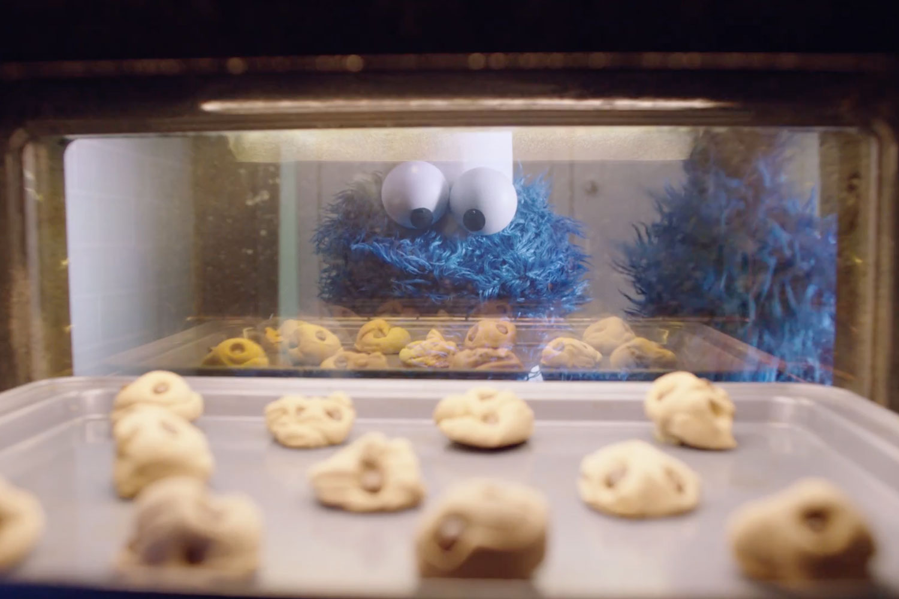
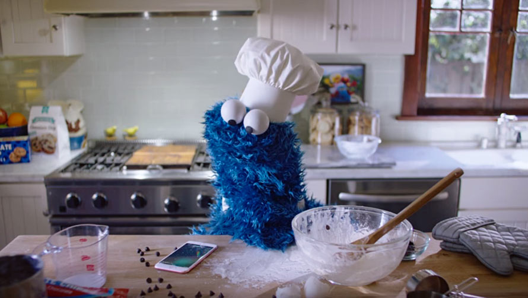
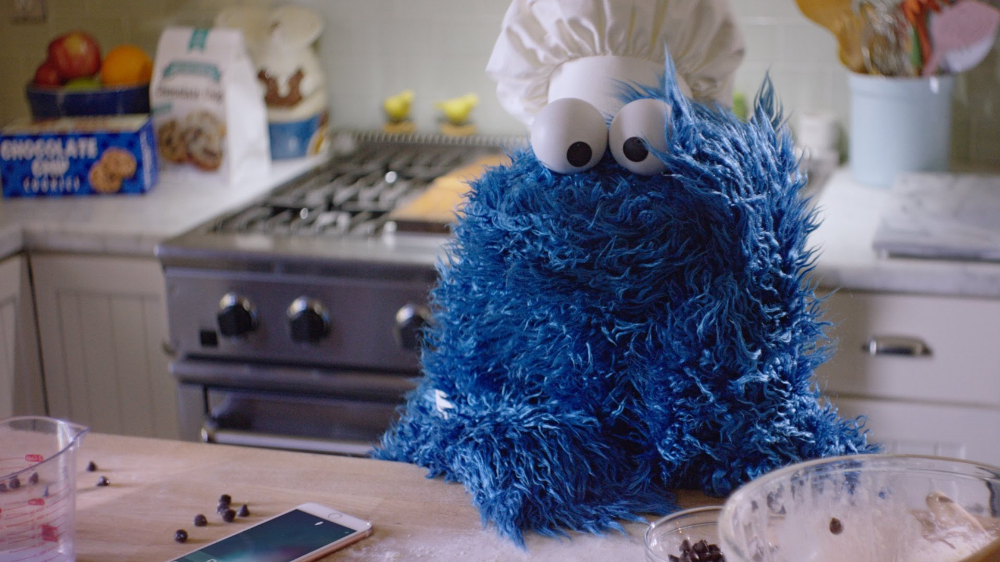

| Prep Time |
20 Minutes |
| Cook Time |
9-12Minutes |
| Serving |
20 Cookies |

Ingredients
- 2 1/4 cup flour
- 3/4 cup brown sugar
- 3/4 cup sugar
- 1 tsp vanilla
- 1 tsp baking soda
- 1 tsp salt
- 2 cups chocolate chips
- 2 sticks butter one cup

Directions:
(Allow for the dairy to become room temperature)
- Preheat oven to 375o
- Add the butter, eggs, vanilla, salt, both sugars and mix.
- Once the mixture looks creamy, then start adding the flour.
- You want to add the flour in slowly.
- Add the baking soda. Mix well.
- Add the chocolate chips and mix those by hand, if you have been using a mixer.
- Once all ingredients are mixed in, spoon dough onto a nonstick pan using a tablespoon.
- Cook about 9-12 minutes or until the edges are golden brown.
- Once the cookies are at your desired cooked degree (gooey or crispy) Remove from the oven.
- Place the cookies on a
rack to cool.
- I don't have a rack, so I use a paper bag. For reals!